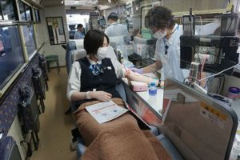
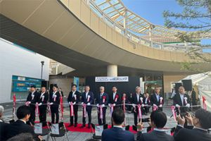

かわしんの思い
OUR VISION
業務内容
JOBS
渉外業務
地域の企業、ご家庭を訪問する営業の仕事です。 「足」を活かしたFace to Faceで、信用金庫の主役です。 お客様のニーズを捉え、預金・融資・金融商品などの提案を行います。
預金業務
窓口（テラー）業務・後方事務は、お金の入出金や振込など預金に関する業務全般を担当します。 「笑顔」を活かしたFace to Faceで、お客さまのおもてなしをします。 様々なライフステージのお客様との関係を深め預金・融資・金融商品などの提案を行います。
融資業務
お客さまからの融資のご相談、お申込みなど一連の融資業務に携わります。 財務分析・改善、事業承継など「未来を見据えた」Face to Faceで融資提案業などを行います。 他の業務担当と連携、情報共有し、お客さまの立場で考えたコンサルティング業務などを行います。
教育制度
SUPPORT

自己啓発支援の推進
当金庫では意欲のある職員を積極的にサポートしています。修了者へは受講料補助を実施。 「FP1級技能検定」：養成講座派遣、対策特訓セミナー受講など。 「任意通信講座」 ：各種検定試験にチャレンジして資格取得をサポート。

各種研修
新入職員には「新入職員研修会」、「新入職員フォロー研修」、「新入職能研修」などを実施。 その他にも、階層・職能別研修、外部派遣研修など階層や担当係に応じた各種研修を実施。 座学ではなく現場で学ぶ、工場見学研修やLMC研修もあります。

スキルアップ
通信教育、内部集合研修、外部派遣研修を通じ基本知識習得をサポート。 業界のトレンドを題材とした自主研修会の開催など。
先輩社員の声
入社当初は金融の知識がほとんどありませんでしたが、先輩や上司が丁寧に指導してくださり、安心して成長できました。
社内研修や資格取得のサポートも充実しており、意欲次第でどんどんスキルアップできます。アットホームな雰囲気の中で、のびのびと働けるのが当金庫の魅力です。

地域支援部 Aさん
数字で見る、かわしん
NUMBERS
地域と共に、築いてきた歴史と信頼
| 設立年 |
|---|

1937 年 |
| 店舗数 |
|---|

36 店舗 |
| 役職員数 |
|---|

549 名 |
「長く働きたい」と思える環境
| 平均勤続年数 |
|---|

15.2 年 |
| 月平均残業時間 |
|---|

3 時間 |
| 平均有給休暇取得日数 |
|---|

12 日 |
多様な人が安心して働ける職場を目指して
| 新卒採用者の定着率 |
|---|

92.3 % |
| 育児休業取得率 |
|---|

100 % |
| 管理職の女性割合 |
|---|

10.0 % |

地域活動
ACTIVITY
-
出前授業（豊川高校）
-
キッズ・マネースクール
-
フードバンクへ寄贈
-

献血
-

しんきんサミット
-
能登復興「食べて応援」
-
出前授業（豊川高校）
-
キッズ・マネースクール
-
フードバンクへ寄贈
-
献血
-
しんきんサミット
-
能登復興「食べて応援」

採用情報
RECRUITMENT
募集要項
| 採用学科 | 全学部全学科 |
|---|---|
| 採用人数 | 大学卒、短大卒 （未定） |
| 採用職種 | 総合職（プール職） |
待遇と勤務
| 初任給 |
大学卒：220,000円 短大卒：190,000円 |
|---|---|
| 諸手当 | 通勤手当、渉外手当、資格取得手当、他 |
| 昇給 | 年1回（4月） |
| 賞与 | 年3回（6月・12月・3月）※3月は、職種および業績により支給 |
| 勤務地 | 愛知県内（豊川市・豊橋市・蒲郡市・新城市・田原市・岡崎市・北設楽郡東栄町・額田郡幸田町） |
| 勤務時間 | 8:45～17:30 |
| 休日休暇 | 土曜、日曜、祝日、12月31日～1月3日、年次有給休暇、慶弔休暇、誕生日休暇、介護休暇、ボランティア休暇、他 |
| 教育制度 | 新入職員研修会、階層別研修会、職能別研修会、自己啓発支援制度、他 |
| 福利厚生 | 各種社会保険、職員融資制度、提携保養所エクシブ、 奨学金返済資金支援制度、早期資格取得制度、 旧姓使用制度、通信制大学学費支援制度、他 |


よくある質問
FAQ
実際に他地域出身の職員も多数活躍しています。
基本的に地域密着型のため、遠方への転勤はありません。
育休・産休制度の取得実績も多数あります。
金庫概要
OVERVIEW
| 創業 | 1937年（昭和12年）11月 |
|---|---|
| 本店 | 豊川市末広通3丁目34番地1 |
| 預金 | 8,783億円 |
| 貸出金 | 4,075億円 |
| 出資金 | 1,411百万円 |
| 会員数 | 37,347人 |
| 店舗数 | 36店舗（本店1、支店33、出張所2） |
| 役職員数 | 549名（役員12名、職員537名） |
お問い合わせ
豊川信用金庫 人事部
0120-09-2317
担当：人事部（渡辺、大西）